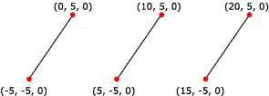

A line list is a list of isolated, straight line segments. Line lists are useful for such tasks as adding sleet or heavy rain to a 3D scene. Applications create a line list by filling an array of vertices, and the number of vertices in a line list must be an even number greater than or equal to two. The following illustration shows a rendered line list.

You can apply materials and textures to a line list. The colors in the material or texture appear only along the lines drawn, not at any point in between the lines.